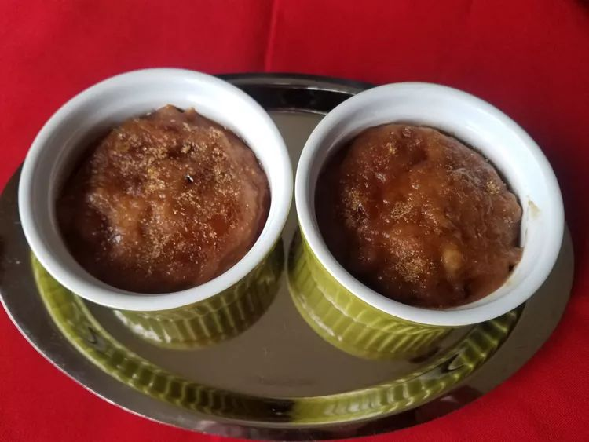

Chocolate Crème Brûlée

Description
This crème brûlée gives the custard-y texture with a chocolate-y twist.
This recipe is incredibly easy to follow, especially for beginners, give it a try!
Ingredients
- 1 quart heavy cream
- ½ cup white sugar
- 2 teaspoons vanilla extract
- 9 egg yolks
- ½ cup chocolate chips
- 2 tablespoons white sugar, or as needed
Steps
-
Preheat oven to 325 degrees F (165 degrees C).
Set 6 (6 ounce) ramekins on a baking sheet.
-
Pour cream, sugar, and vanilla into a saucepan, and place over medium heat.
Stir to dissolve the sugar, and heat until it begins to simmer, then remove from heat.
Place egg yolks in a large bowl, and slowly whisk in the hot cream mixture,
about 2 tablespoons at a time, until you have added approximately a cup of cream to the yolks.
At this point, pour in the remaining cream, and whisk until smooth.
Stir in the chocolate chips, and set aside for 5 minutes.
-
Stir the mixture until the chocolate is smooth and evenly distributed.
Pour into ramekins, and bake in preheated oven until the center is just set, 15 to 20 minutes.
Remove from oven, and allow to cool for 45 minutes, then place into the refrigerator,
and chill until cold, about 6 hours.
-
Place oven rack in topmost position.
Turn oven to Broil.
-
Sprinkle the tops of each creme brulee with sugar until evenly coated, gently pour off excess sugar.
Place ramekins onto a baking sheet, and place under the broiler until the sugar bubbles and turns a light caramel brown.
Serve immediately.
Original recipe by LSNEED62 on Allrecipes